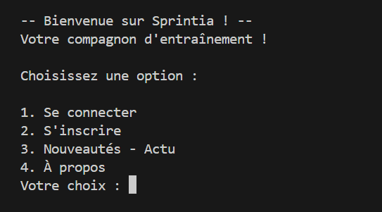
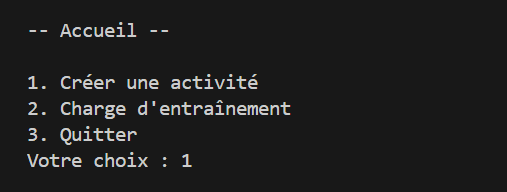
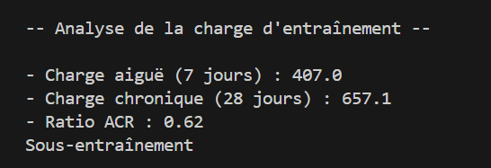

La première version de SPRINTIA est sortie le 14 Juin 2025. J'ai commencé à taper la première ligne de code le 20 mai 2025. Au début, je ne savais pas comment appeler ce projet. Grâce à un dictionnaire de champs lexicaux en ligne, j'ai eu quelques idées et j'ai décidé de l'appeler "PulseTrack". Mais, quelques jours plus tard, le nom "SPRINTIA" m'est venu en tête et j'ai décidé de le garder définitivement.
D'où vient l'idée ? Au début, je pensais à "Sprint" mais tout seul ça ne sonnait pas très bien. Donc, j'ai testé différentes syllabes puis une idée m'est venu en tête. Le 10 juin 2024, Apple annonçait à sa WWDC 2024 : "Apple Intelligence" une IA qui sera au coeur de l'iPhone, le tout en local sur l'appareil. Les annonces étaient prometteuses, même si en Janvier 2026, Apple n'a toujours pas tenu toutes leurs promesses.
Bref, lors de cette conférence ils avaient trouvé un très bon acronyme : "AI" pour "Apple Intelligence". Je me suis dit, si un jour je rajoute de l'ia dans "Sprint" je voulais également pouvoir faire cette acronyme. Mais, à l'époque, je ne m'imaginais pas la complexité de faire une IA. Donc, j'ai ajouté l'acronyme IA (Intelligence Artificielle) à "Sprint" ce qui donne "SPRINTIA".
Avant de coder, il faut d'abord savoir quel langage utiliser. J'avais plusieurs choix :
• Python
• HTML, CSS, Javascript
Mais, à cette époque, j'avais commencé à apprendre le langage Web (HTML, CSS, Javascript), mais je n'étais pas particulièrement bon. J'avais les bases mais j'étais très loin de pouvoir développer un service complet.
Donc, je voulais le faire en Python en sachant que ça me permettrait de devenir bien meilleur avant la rentrée parce que j'ai pris NSI, qui est majoritairement du code en Python.
La toute première version de SPRINTIA n'était pas une application, mais un programme basique. Pour naviguer dans les menus il fallait entrer dans la console 1, 2 ou 3, chaque numéro correspondait à une action.


